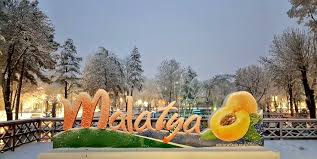
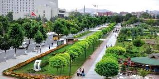

MALATYA |
|||||||||
|---|---|---|---|---|---|---|---|---|---|
|
Hakkında Özgeçmiş Şehrim Mirasımız Login İletişim |
|||||||||
| Malatya, Türkiye'de yer alan şehir ve ülkenin 81 ilinden biri.Malatya İl Nüfusu: 800.165'dir (2019 sonu). Ülkenin en kalabalık 28. şehri olan Malatya, 2019 itibarıyla 800.165 kişilik nüfusa sahiptir.Bölgenin Yukarı Fırat Bölümü’nde bulunur. Güney ve orta Anadolu bölgelerinin hemen hemen kesişme noktasında bulunması nedeniyle sosyal yapısı çeşitlilik ve zenginlik gösterir. İlk olarak Hitit döneminde kurulmuştur. O günden bugüne el değiştirerek yıkılıp yeniden yapılarak günümüze kadar gelmiştir. Malatya, kayısı diyarı olarak bilinir. İlde yetişen kayısılar, dünya genelinde ünlüdür ve kuru kayısı üretiminin % 80'ini Malatya Ovası’nda bulunan kayısı bahçeleri sağlar. Büyükşehir yasası ile 2014 yerel seçimlerinin ardından büyükşehir statüsüne kavuşmuştur. Aynı zamanda Malatya 2 Cumhurbaşkanı çıkarmış tek şehirdir, bu kişiler, İsmet İnönü ve Turgut Özal'dır. | |||||||||
|  |  | ||||||||